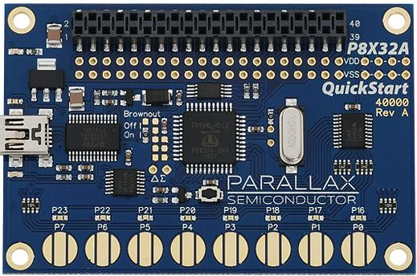
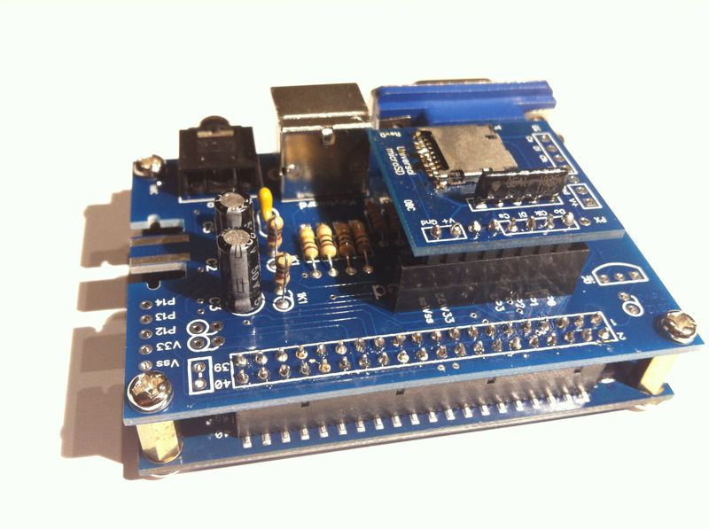

The Pocket Mini Computer on Parallax Propeller microcontroller
The microcontroller from Parallax called Propeller comparing to PIC or AVR occupies quite an unusual niche. The first two can be called as general purpose architectures. But the creators of Propeller used another approach.
Main distinctive features of Propeller:
- 8 independent cores (cogs) working in parallel. Any resource sharing (memory or I/O) is handled by hardware and isn’t under programmer’s control. This guaranties predictable latency. Each cog (core) has its own private 4KB RAM, plus an ability to generate the TV or VGA video signal.
- There is no concept of interrupts in any form. Instead you run concurrent tasks on different cogs.
- Two main programming languages available: a high level one called Spin, and the assembly language. Spin simplifies concurrent and multi-core programming, and its interpreter is build-in to the crystal.
- No almost a concept of programming or flashing the crystal. The higher half of the address space (32KB) is ROM and contains the Spin interpreter and other system tables. The lower half is RAM and it is volatile. It needs to be loaded on each reset. In real applications an external EEPROM memory chip is connected and Propeller copies 32KB from that EEPROM (via I2C) to RAM.
- Propeller is declared as 32-bit because it supports 32-bit operations, but the address space is 16-bit (64KB).
The Spin language was designed to make concurrent and multi-core programming easier. This language is a mixture of procedural and object-oriented approaches.
Below is an example of code in Spin launching a function to spin on three cogs. The code is really easy to read and understand.
CON
_clkmode = xtal1 + pll16x 'Establish speed
_xinfreq = 5_000_000 '80Mhz
OBJ
led: "E555_LEDEngine.spin" 'Include LED methods object
VAR
byte Counter 'Establish Counter Variable
long stack[90] 'Establish working space
PUB Main
cognew(Twinkle(16,clkfreq/50), @stack[0]) 'start Twinkle cog 1
cognew(Twinkle(19,clkfreq/150), @stack[30]) 'start Twinkle cog 2
cognew(Twinkle(22,clkfreq/100), @stack[60]) 'start Twinkle cog 3
PUB Twinkle(PIN,RATE) 'Method declaration
repeat 'Initiate a master loop
repeat Counter from 0 to 100 'Repeat loop Counter
led.LEDBrightness(Counter, PIN) 'Adjust LED brightness
waitcnt(RATE + cnt) 'Wait a moment
repeat Counter from 100 to 0 'Repeat loop Counter
led.LEDBrightness(Counter,PIN) 'Adjust LED brightness
waitcnt(RATE + cnt) 'Wait a moment
The cognew function kicks off the function Twinkle on three cores
and parameterizes each one with a frequency and stack.
The diagram of the Propeller architecture:

The name “Propeller” comes from how the Hub controlling resource sharing switches between cogs. It does round-robin similar to the spinning propeller.
I don’t want to go deeper into Propeller in this post because this is a long story. Instead I put a list of very useful books at the end. They provide the exhaustive details.
But I’d like to share about an interesting project called “The Pocket Mini Computer” based on Propeller (P8X32A). This project uses the “P8X32A QuickStart” evaluation board as a base.

The photo from the official website:

In fact, the author offers the evaluation board, plus the extension, which has VGA, microSD, PS/2, sound and Wii Gameport interfaces. Optionally, the 32KB SRAM chip can be added.
The point of the project is a BASIC interpreter running on this computer. It converts it to a micro-computer a-la from 80s. The interpreter is written in Spin (sources are open). The dialect is quite limited though: no arrays, real and string variables, one letter variable names etc. Nevertheless, BASIC provides access to all peripherals including the SD-card. Plus, it allows running native binaries which can be developed in assembly, C (Parallax has a GCC version for Propeller) or Spin.
Below there are a few pictures of the kit to understand how it looks like. As I said, PMC is based on the P8X32A evaluation board, so only the extension board requires assembly (soldering).


Almost everything is in place.

The sandwich is ready.




A small demo of graphics capabilities.
Overall impression
Propeller
It is not easy to call it “a general purpose microcontroller”. In my subjective view it fits perfectly into certain applications, like, for instance, games consoles or mini-vending machines because it can generate a good quality video signal out of the box. But, on the other hand there are no built-in PWM, ADC/DAC, flash memory, triggers, interrupts, and the creators recommend implementing such functionality manually or using external chips. In the books listed in the end there are plenty examples of such applications.
Conslusion: the very interesting and worth considering architecture.
The PMC kit
This is a very interesting and entertaining project. Of course, it is obvious that BASIC is very limited in resources, for instance, RAM. Maximite, for example, based on PIC32, is much more powerful. It can easily run not only its powerful MMBasic, but, for example, RetroBSD or even emulate Radio-86RK.
But, $39 is the great offer for those who want to play with Propeller having complete hardware.
Dessert
Here is a list of books I read (regarding the architecture) and skimmed (regarding projects). All are recommended.
A short, concise and easy book for beginners. It describes many projects on Propeller. One of the authors is the PMC inventor.
Getting Started With the Propeller

A very solid and easy to read book. It explains in all details the architecture of Propeller. Though the author doesn’t cover programming in assembly, only in Spin, but he precisely shows how to use properly and benefit from the original multi-core architecture of Propeller. The first section covers the internals of Propeller. Following sections contain various projects (can be skipped on the first reading).
Programming the Propeller with Spin : A Beginner’s Guide to Parallel Processing (Tab Electronics)

A collections of real applications with Propeller from its creators.
Programming and Customizing the Multicore Propeller Microcontroller : The Official Guide

Disclaimer